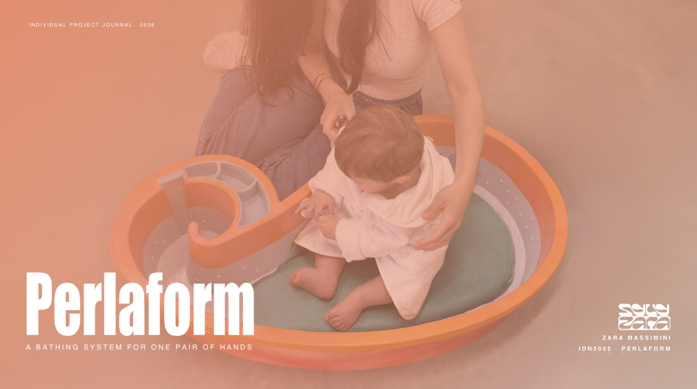

Project 01 · Capstone · Latest
Perlaform
A nautilus shell inspired baby bath for single mothers recovering from childbirth. It holds the baby, keeps washing essentials within reach and empties without being lifted: a bathing system for one pair of hands.
View project
Project 02 · Harm reduction
Rocket Revive
A wearable naloxone carrier that turns overdose response into a bold festival accessory, so more people actually carry it.
View project
Project 03 · Wearable carry
AdraCard
A leather adrenaline pouch designed to disappear into festival fashion, so auto-injectors stop getting left at home.
View project
Project 04 · Hand tools
Fijn Angle Grinder
An ergonomic angle grinder for the Fijn tool range, refined through teardown, user interviews and clay and 3D-printed prototypes.
View project
04 · Making & material studies
Hands-on craft
Hands-on craft
& personal work.
Where I learn by building, glass, timber, leather, textiles, charcoal and 3D-printed form, each project solving a real making problem.

Personal · Textiles
Textile Experimentation
A garment built up with sewn discs for a fish-scale effect, solving visible-thread and durability problems with hidden beads and a per-disc threading method.
View project
Personal · Product
Extrusion Phone Stand
A snap-on laptop companion so I could keep an eye on the clock or FaceTime while working, iterated through weight and balance problems toward a refined side-mounted design.
View project
Personal · Fine art
Charcoal on Canvas
Exploring motion and depth in charcoal, layering willow and compressed charcoal over a re-textured gesso surface to create a blurred, dynamic sense of speed.
View project
Making · Material study
SOMA Cube
A single puzzle built four ways (foam, plastic, 3D-printed and wooden pieces) to learn finishing, tolerance and how the same form behaves across materials.
View project
Personal · Glass & timber
Photobooth Strip Frame
A handmade frame combining cut glass and routed timber, where I learned soldering, the importance of flux, and that a bent paperclip can solve a real functional problem.
View project
Skill · Visualisation
Sketching & Ideation
Ongoing exploration of light, glass, hands and ergonomic forms with copic markers, the fast, foundational thinking behind every product I design.
View project